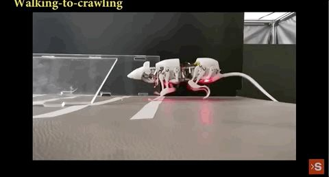
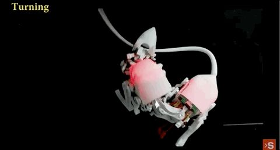
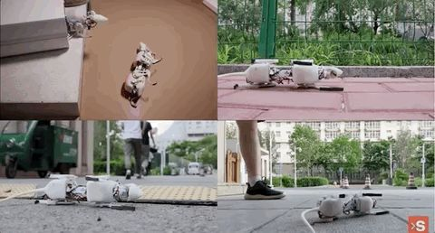
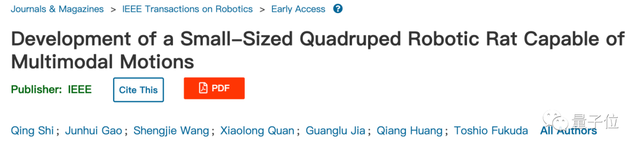
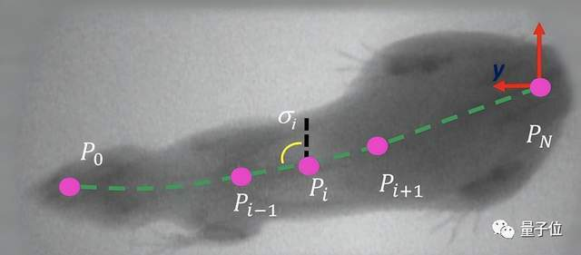
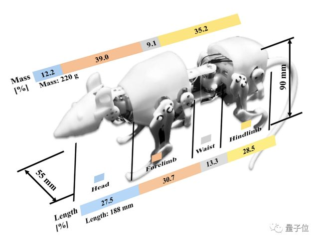
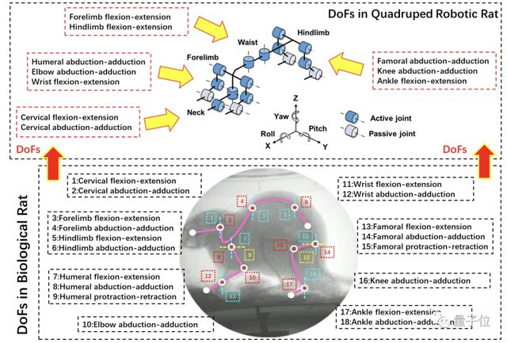
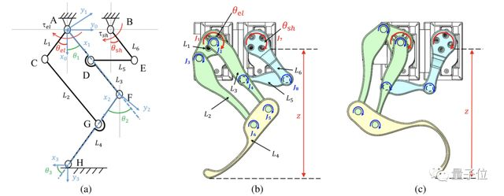
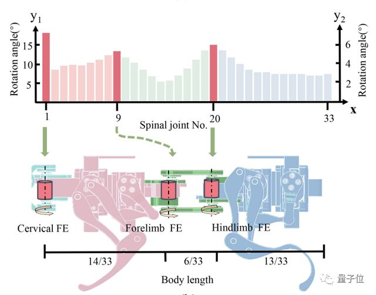

北理工大学的仿生电子鼠会做灾后搜救了
作者：Alex - 凹非寺
狭窄、多弯道的空间难以探测？
一只来自北理工的机器小鼠SQuRo对此给出否定答案。

它不仅能在狭小空间内灵活穿行，轻松完成各种运动并进行变换，如蹲下起立、行走、爬行等，简直是应对突发灾情或狭窄管道的“神器”：

还能在不足自己身长一半的小半径内快速转身，咬住自己的尾巴360°转圈（半径比其他机器人小得多）：

甚至还很坚强，可以在跌倒后迅速站起来。

最关键的是，这只小鼠还很能载重——目前它已经能成功地带着一个占自重91%（200克）的重物，通过有20°倾角的场地。
（想象一下你背着和自己差不多重的一个包爬坡上坎的感觉……）
研究成果论文的第一作者，北理工石青教授表示，目前市面上有不少足式机器人，但大多不擅长应对狭窄空间：
大型四足机器人运输能力强，但不能进入狭窄的空间；微型四足机器人虽然可以进入狭窄空间，但其携带重物的能力有限。
这项来自北理工的研究成果，目前已经发表在IEEE旗下期刊上。

见识到这只机器小鼠出色的敏捷性和载荷能力后，再来深入了解一下吧！
灵感来自不惧狭窄弯道的老鼠
此前，鲜有人给体重小于1公斤的小型四足机器人设计能规划运动的多模态控制框架。
多模态控制是指随系统运行状态而不断变化策略的控制方式，可以实时选用最合适的控制算法，并选择恰当时机进行切换，使系统更加稳定、准确、反应迅速。
由于规模限制，小型机器人的硬件组件很少，这导致了其低感知和处理能力较弱。
另外，现有的机器人研究主要集中于动态稳定性和机械约束，而忽略了与某种机器人相似生物的运动特征。
研究人员发现，老鼠在各种狭窄复杂的环境中运动十分敏捷，于是他们准备从生物角度出发，在老鼠身上“取取经”。
首先，用X光片记录下老鼠运动中的骨骼结构以提取关键运动关节，然后建立了四足机器小鼠的基本模型。

机器小鼠SQuRo的质量为220克，和八周大的黑毛鼠体重的相似；它的体长也和真老鼠差不多。

北理工团队还赋予了这只机器小鼠多模态运动规划和控制框架，使其能够感知和处理复杂的现实环境。
根据老鼠运动的3大能力设计基本结构
研究团队据X光片分析发现，老鼠主要靠这三个主要功能，来组合做出各种运动：
-
肢体运动
-
脊柱屈伸和侧向弯曲
-
颈椎运动
于是，研究人员为机器老鼠配置了12个活动自由度（四肢各有2个自由度，腰部2个屈伸自由度，颈部2个自由度），以及4个被动自由度，以模仿关节的屈伸和转动。
按：自由度是独立变量的个数。 具体而言，若总变量个数为N，约束条件个数为M，则自由度。

机器小鼠的四肢结构设计示意图如下：
图a、b分别为左前肢的机构运动简图和骨架模型结构；c为左后肢的骨架模型侧视图。
相比前肢，后肢的底部为一个更弯曲的杆，以提供更大的前推力——这与老鼠主要依靠后肢产生推力的现象一致。
研究者分析老鼠行为发现，它的转身运动是从头部到躯干，再到臀部，逐步发力的。
受益于灵活的脊柱，老鼠可以迅速变换方向。
小鼠的颈椎由好几节构成，其中第一节颈椎的旋转角反映了头部和躯干之间的角度。
下面的关节旋转角度图中，有三个峰值，对应三个最明显的运动，即：颈椎屈伸、
前肢第二胸椎的屈伸运动，和第十三胸椎的后肢屈伸运动。

因此，研究者为脊柱配备了三个关于屈伸的主动自由度，用于机器小鼠的正面转弯运动。
由于颈部旋转在老鼠的日常活动中很少见，所以真老鼠的颈部活动对设计探测机器人来说，意义不大。
研究者配置了一个用于颈部屈伸的主动自由度，和一个用于颈部内收的主动自由度，这两个自由度都位于头部和躯干的连接处。
机器小鼠共有33个脊椎关节，研究者将后肢屈伸的关节设置于第22个关节处，这与老鼠的对应的关节位置相似。
研究团队介绍
这项研究来自北京理工大学。论文一作石青，现任北京理工大学教授、机电工程学院智能机器人研究所副所长，本科毕业于北理工，博士毕业于早稻田大学，并曾在早稻田大学进行博士后工作。主要研究方向是仿生机器人、生机电融合。这篇论文由石青导师黄强、中科院外籍院士福田敏男，以及石青带领的仿生机器人团队共同完成。
团队研究的仿生鼠，曾被昆士兰大学计算机教授Janet Wiles评价称“达到业界SOTA水平”。团队表示，未来还将通过闭环控制和深入动态分析等方法，来进一步提高机器小鼠的敏捷性，并且有兴趣将其商业化。
你觉得这只机器小鼠还能被用在哪些地方呢？